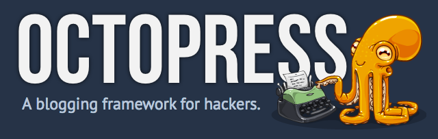

Saying Goodbye to Wordpress
It’s Been a Great Ride
There is no doubt that Wordpress is a great piece of software. As much as people love to hate on PHP, it runs a lot of the internet.
I’ve been running Wordpress personally and professionally for years. It only gets better. I was only hacked once :)
Rethinking What I Need
Since moving to a Low End Box, my resources have been tight. Even on a tuned system, I can’t run much more interesting things than my Nginx+PHPfpm+MySQL.
Right now I also have 32000 spam comments in my queue. Akismet does a great job, but I wonder if I even need it. All I really need is a tiny corner of the web, read only is ok.
What I Lose
- Comments
- Cool plugins
- Well trusted codebase
- Easy to use gui
- Familiar Workflow
What I Gain
- Immutability and hackproof deployment
- Entire classes of server maintenance issues disappear
- Git!
- Grep-able blogs
Making The Change

- I’m thankful for the excellent Octopress software.
- I used this XML export script to script my conversion repeatedly.
- I used the Exitwp to convert my wordpress XML tump